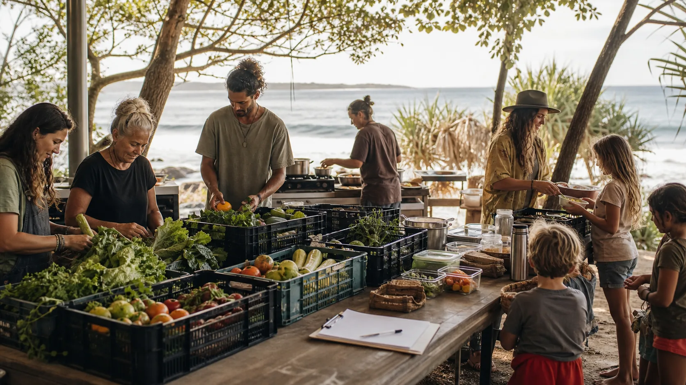

Operating loop
Pull up a chair, but pass the safety gate first.
The Shared Table is a simple public story wrapped around careful private operations: surplus is offered, checked, prepared, shared and logged.

Image model prompt
Photorealistic editorial website section image for the Straddie Shared Table operating loop. Scene: a practical outdoor community table on Minjerribah / North Stradbroke Island with labelled-looking but unreadable crates, people sorting safe surplus produce, a clipboard, reusable containers, a small kitchen prep area, and a warm coastal background. The image should communicate gather, check, cook, share, log without any readable words. Natural Australian island light, documentary style, grounded and realistic, no logos, no QR codes, no signage, no fantasy, no text. Wide landscape composition, 16:9, clean negative space for cropping, high detail.
What has to exist
A table is a system, not just an event.
The smallest serious version needs roles, safety checks, a venue plan, clear public call-outs, private rosters and a way to learn after each session.